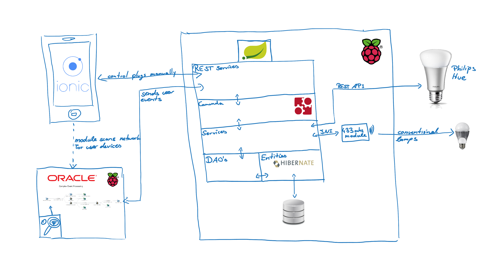

Live Rating
IoT Prototyp

Eine Automatisierung für Gebäudebeleuchtung
Pascal Brokmeier
Student der Wirtschaftsinformatik (Uni zu Köln)
Bereich: Software Development (seit 2011)
IoT, AngularJS, Mobile, JavaEE, Spring, ...
Dominik Bial
Consultant bei OC seit Anfang 2013
Bereich: Service-orientierte Architekturen
PM, SOA, IoT, Java EE, ...
Live Rating
Idee (ursprünglich)
- Automatisierung der Beleuchtung in Studenten WG's
- Speziell Licht in Gemeinschaftsräumen sowie privaten Räumen anhand von Events ein/ausschalten
- Events in Form von Bewohner kommt an / verlässt das Gebäude
Internet of Things
- Trend
- Kommunikation & Protokolle
- Who sets the standard?
- Herausforderungen & Chancen
- Was können wir schon?
- Prototyp
- Fazit
What Gartner says
Google Trends
Evolution M2M to IoT
http://de.slideshare.net/zdshelby/coap-tutorial
Internet of Things
- Trend
- Kommunikation & Protokolle
- Who sets the standard?
- Herausforderungen & Chancen
- Was können wir schon?
- Prototyp
- Fazit
Was gibt es denn so?
LTE Advanced Cellular 4G / 3G - GPS / GPRS 2G / GSM / EDGE, CDMA, EVDO WEIGHTLESS WIMAX LICENSE-FREE SPECTRUM DASH 7 TM WiFi IPv4 IPv6 UDP DTLS RPL Telnet MQTT DDS CoAP XMPP HTTP SOCKETS REST API WAN Wide Area Network - 802.20 MAN Metropolitan Area Network -802.16 LAN Local Area Network - 802.11 PAN Personal Area Network - 802.15 BLUETOOTH UWB Z-WAVE ZIGBEE 6LoWPAN NFC ANT RFID POWERLINE ETHERNET PRINTEKann man das ganze irgendwie Strukturieren?
Protokolle, Protokolle, Protokolle
Lingua Franca des IoT?
MQTT, CoAP, DDS, RESTful HTTP, XMPP, ...
CoAP als Beispiel
http://de.slideshare.net/zdshelby/coap-tutorial
Okay. Lightweight! Wie light?
Pointé
- Abwägen: Energieverbrauch vs. Bandbreite vs. Sendedistanz
- Auch als Enterprise-Entwickler: Auseinandersetzung mit M2M Technologien
- Für jeden Use-Case separat abwägen. Weg von "nur" HTTP/REST Knüppel
Internet of Things
- Trend
- Kommunikation & Protokolle
- Who sets the standard?
- Herausforderungen & Chancen
- Was können wir schon?
- Prototyp
- Fazit
Einige wenige
Open Automotive Alliance, VITAL, RERUM,CITY PULSE, IoT-I, SPRINT, Apple Smart Home Kit, Cargo2000, OpenIoT, IoT@Work, INDISPUTABLE KEY, PRIME
Audi GM Google Honda Hyndai Nvidia National University of Ireland INRIA Reply Santers SingularLogic Atos Athes Information Technolgy Images & Co Camden Twon Unlimited Technische Universität Istanbul Stadt Istanbul Eurescom Atos Siemens University of Bristol Linköping University Universität Passau zolertia FORTH cyta Stadt Tarragona Stadt Heraklion University of Surrey Alexandra Institute Ericsson Siemens National University of Ireland Hochschule Osnabrück Stadt Brasov Stast Aarhus Wright State University ISMB Frauenhofer IIT Cnet Injet Telecom Italia Stadt Torino Alexandria Institute Universität Duisburg-Essen Easy Global Market SINTEF GNKS Telefonica NEC Europe SAP Universität Lübeck CEA Alcatel Lucent VDI IT Thales Research & Technology Universität St Gallen Alexandria Institute Universität Zürich Telenor Asa Universität Melbourne Hitachi Europe VDI/VDE INNOVATION + TECHNIK GMBH HITACHI EUROPE LIMITED NXP SEMICONDUCTORS GERMANY GMBH SIEMENS AG UNIVERSITAT ST GALLEN SAP AG UNIVERSITY OF SURREY FRAUNHOFER-GESELLSCHAFT ZUR FOERDERUNG DER ANGEWANDTEN FORSCHUNG E.V COMMISSARIAT A L ENERGIE ATOMIQUE ET AUX ENERGIES ALTERNATIVES NEC EUROPE LTD NXP SEMICONDUCTORS BELGIUM NV ORACLE IBM RESEARCH GMBH UNIVERSITA DEGLI STUDI DI ROMA LA SAPIENZA CONSORZIO FERRARA RICERCHE CREATIVE SYSTEMS ENGINEERING (C.S.E) MONOPROSOPI EPE JULIUS-MAXIMILIANS UNIVERSITAET WUERZBURG ALCATEL - LUCENT BELL LABS FRANCE ALCATEL-LUCENT BELL NV TEKNOLOGIAN TUTKIMUSKESKUS VTT Frauenhofer FIT Cnet SAP COMAU Universität Kosice ISMB tnm Injet Intersoft THE UNIVERSITY OF READING FONDAZIONE CENTRO SAN RAFFAELE DEL MONTE TABOR VU LOG SAS ASSOCIATION FONDATION INTERNET NOUVELLE GENERATION A.F.I.N.G COLLABORATIVE ENGINEERING S.R.L. INSTITUT NATIONAL DE RECHERCHE EN INFORMATIQUE ET EN AUTOMATIQUE THE UNIVERSITY OF NOTTINGHAM BIBA - BREMER INSTITUT FUER PRODUKTION UND LOGISTIK GMBH Advanced Laboratory on Embedded Systems S.r.l. EADS Innovation Works UK Elvior Fraunhofer FOKUS IBM Israel - Science and Technology LTD Israel Aerospace Industries LTD Wolfram MathCore AB Sintef Vlastuin Hospital San Juan de Dios Cordys Induct IC Focus Aalborg University iDevices iHome OSRAM CREE CHAMBERLAIN Marvell Skybell august Honeywell Haier Schlage Philips Kwikset Broadcom netatmo Withings Swiss World Cargo DB Schenker Lufthsnasa Cargo cargolux descartes cargo community network panalpina riege software unisys ibs turkish cargo etihad cargo Air Canada Cargo Lei Wageningen TNO ATB CentMA Atos ariadna MTT KTBL University of Athens Polizecncia Aston University VTT John Deere EHI Retail Institute GS1 SGS Bonpreu University of Ireland RESEARCH AND EDUCATION LABORATORY IN INFORMATION TECHNOLOGIES - AIT ECOLE POLYTECHNIQUE FEDERALE DE LAUSANNE - EPFL FRAUNHOFER-GESELLSCHAFT ZUR FOERDERUNG DER ANGEWANDTEN FORSCHUNG E.V - IOSB ELECTRONIC SYSTEMS AND SOFTWARE APPLLICATIONS S.A. - SENSAP SA ACROSSLIMITS - AL COMMONWEALTH SCIENTIFIC AND INDUSTRIAL RESEARCH ORGANISATION - CSIRO University of Zagreb Faculty of Electrical Engineering and Computing - UNIZG-FER Universität Duisburg-Essen ETRA Investigacion y Desarrollo Aristech National University of Ireland, Galway The Open University Empresa Municipal de Transportes de Madrid Alcatel Lucent Atos Origin Fiat Group Siemens software ag Telecom Italia Thales Zigpos Ambient Systems Arago Systems Innotec 21 M3S Trilogis CREATE-NET KAIST TUDelft Joint Research Centre (JRC Ispra) Applied Scientific Research (TNO) Centre for Communications Systems Research (CCSR) UPRC VTT Technical Research Centre Wuxi SensingNet Industrialization Research institute Siemens Microsoft Research Fiat Research Centre TXT e Solutions City University London inIT - Institut Industrial IT inno Ericsson Telecom Italia gemalto CEA CWC FB consulting University of Luxembourg K. U. Leuven TST Jacobs University ZIGPOS MAYA Technologies Banco Santander Santander City Council Tecnalia University of Surrey Alexandra Institute ATOS NICT Portugal Telecom Siemens University of Applied Sciences Osnabrueck University College of London(UK) University of Murcia(Spain) Vienna University of Technology (Austria) University of Applied Sciences Western Switzerland (Switzerland) Luxembourg University (UL) KAIST (Korea) Mandat International (Switzerland) Ericsson(Serbia) RunMyProcess(France) SAP (Germany) Philips Lighting (Netherland) Somfy(France) Permasteelisa(Italy) CIAT(France) ST Microelectronic (Italy) Cisco (Netherland) ETSI(France) Sensinode(Finland) ATB - Institut für angewandte Systemtechnik Bremen GmbH DERI - National University of Ireland, Digital Enterprise Research Institute CARSA - Consultores de Automatizacion y Robotica, S.A. Telefónica Investigación y Desarrollo Sociedad Anónima Unipersonal PRO DV Software AG Softrónica S.A TRIMEK S.A. Sidhén Teo Euro Coach Builders Brüggen Oberflächen- und Systemlieferant GmbH OAS AG TNS Sp.z.o.o. European Commission - DG Information Society and Media UNINOVA - Institute for the Development of New Technologies Centre for Global Innovation Management College of Law and Business Aalborg University (Coordinator) INRIA Université Joseph Fourrier Open Source Innovation Ltd UEAPME European Office of Crafts, Trades and SMEs for Standardisation SENS@P Pole Traceability Valence Instituto Telecomunicações ATB Institut für Angewandte System Technik, Bremen, Germany Rheinische Friedrich-Wilhelms-Universität Bonn Bonn, Germany Instituto de Desenvolvimento de Novas Tecnologias Lisbon, Portugal The Open Group Reading, UK European Telecommunications Standards Institute Sophia-Antipolis, France TraceTracker Heddesheim, Germany TeleServ a.s.b.l. Luxembourg Euro Pool System International B.V. Leidschendam, The Netherlands Confédération de l’Artisanat et des Petites Entreprises du Bâtiment Paris, Franc ARDACO AT&S ATMEL BOSCH bumar Continental gemalto ela EPCOS FICOBA FIAT infineon Marelli Metro Group EADS ST Frauenhofer NetHowk Schneider Electronics THALES Siemens vermon VDIVDE|IT Dräger imec SAGEM Genesis Red MIRA Alcatel Lucent ollvetti Pirelli CEA RADWAR VTI VIT Volgswagen Insiel - Informatica per il Sistema degli Enti Locali SpA Insiel Italy VTT - Technical Research Centre of Finland VTT Finland VIU - Venice International University - TeDIS Center, TLSU VIU Italy Telit Communications S.p.A. Telit Italy BIBA BIBA Germany Singular Logic - Information Systems & Applications SA Singular Logic Greece TREDIT - Dievropaiki Etairia Symboulon Metaforon Anaptixis Kai Pliroforikis Ae TREDIT Greece Enicma - ENvision and Interactive Collaboration in information and MAterial supplies -GmbH Enicma Germany CeTIM - Center for Technology and Innovation Management CeTIM Germany Logica Logica Netherlands Oracle-Poland Oracle Poland JSI - Jozef Stefan Institute JSI Slovenia FHV - University of Applied Sciences Vorarlberg FHV Austria CAEN RFID srl CAEN Italy Port Authority of Trieste PAT Italy SDAG Gorizia SDAG Italy Gebrüder Weiss Holding AG Gebrüder Austria SeaRail EEIG SeaRail Finland KUEHNE+NAGEL KUEHNE+NAGEL Greece AKARPORT - Akarnaniko Kentro Syndyasmenon Systimaton Metaforon Anonymos Eteria AKARPORT Greece Omega Omega Romania Safilo SCRA KUEHNE+NAGEL LEIA Nothingham University Barilla Siemens BMW COMAU CEN RWTH Aachen Hilti VDMA Daimler THALES UFRGS Clariant IPTS aps Holcim fatronic NTN_U BWI Zürich KAIST CLEMSON SAP Senai Bombardier Transportation SP Technical Research Institute of Sweden SE Association Forêt Cellulose FR Royal Institute of Technology SE Centre Technique du Bois et de l’Ameublement FR CIRIS Engineering FR IVL Swedish Environmental Research Institute SE Rottne Industri AB SE Technical Research Centre of Finland FI TietoEnator Forest & Energy Oy FI Confidex Ltd. FI Idesco Oy FI Tampere University of Technology FI Lappeenranta University of Technology FI Tallinn University of Technology EE Oskando OÜ EE AS Hekotek EE Skog-Data AS NO Norwegian Forest Research Institute NO Norsk Treteknisk Institutt NO Forestry Research Institute of Sweden SE Sveaskog Förvaltnings AB SE Ducerf Scierie FR Raunion Saha Oy FI Eidskog-Stangeskovene AS NO Scanpole AS NO Etablissements Pierre Mauchamp S.A. FR SETRA Group SE Norsjöfönster AB SE Rolpin IBM Research GmbH CH Unabhängiges Landeszentrum für Datenschutz DE Technische Universität Dresden DE Karlstads Universitet SE Università degli Studi di Milano IT Johann Wolfgang Goethe-Universität Frankfurt am Main DE Tilburg University NL World Wide Web Consortium W3C/ERCIM FR Katholieke Universiteit Leuven BE Università degli Studi di Bergamo IT Giesecke & Devrient GmbH DE Center for Usability Research & Engineering AT Europäisches Microsoft Innovations Center GmbH DE SAP AG Brown University US IBM Belgium Karlstads Universitet Karlstads Universitet Universiteit van TilburgUniversiteit van Tilburg IBM IBM Zürich Research Laboratory Hewlett-PackardHewlett-Packard Technische Universität Dresden Institut EURECOM T-Mobile Johann Wolfgang Goethe-Universität Johann Wolfgang Goethe-Universität Frankfurt am Main TU Dresden Technische Universität Dresden Deutsche Lufthansa Karlstads Universitet Karlstads Universitet TU Dresden Technische Universität Dresden Hewlett-Packard IBM Zürich Research Laboratory TU Dresden Technische Universität Dresden ULDUnabhängiges Landeszentrum für Datenschutz Hewlett-Packard Hewlett-Packard Credentials and Cryptology Research IBM Zürich Research Laboratory Katholieke Universiteit LeuvenKatholieke Universiteit Leuven Chaum LLCChaum LLC Joint Research Centre Ispra Joint Research Centre Ispra Protocols and Authorisation Models Research Università di Milano LAAS-CNRSLAAS-CNRS (Centre National de la Recherche Scientifique) Anonymity and Communication Infrastructure Research RWTH Aachen RWTH Aachen Unabhängiges Landeszentrum für Datenschutz Erasmus University Erasmus University Rotterdam Universiteit van Tilburg TU Dresden Technische Universität Dresden University of Veterinary Medicine Vienna, Austria Federal Institute for Risk Assessment, Germany Institute of Food Research Norwich, UK Agricultural University of Athens, Greece Teagasc Moorepark Food Research Centre, Fermoy, Co. Cork, Ireland University of Burgos, Spain Veterinary Research Institute Brno, Czech Republic University of Ljubliana, Slovenia Veterinary Medical Institute of the Hungarian Academy of Sciences, Budapest, Hungary Výskumný ústav potravinársky, Slovak Republic University Dunarea de Jos Galati, Romania Kalite Sistem Laboratuarlar Grubu, Turkey RTD Services, Austria University of Zagreb, Croatia Austrian Agency for Health and Food Safety, Austria Food Safety Authority, Ireland Hellenic Food Authority, Greece Turkish Food Safety Authority, Turkey National Sanitary Veterinary and Food Safety Authority, Rumania Public Health Authority of the Slovak Republic https://www.rwe.com/web/cms/en/367954/rwe/innovation/projects-technologies/power-and-gas-grids/smartgrids/ http://www.sap.com/pc/tech/internet-of-things.html Dr. Achatz NEST ARM Samsung ABB Automation GmbH, Friedberg AEB GmbH, Stuttgart ARCADIS Deutschland GmbH, Darmstadt Aviainform GmbH, Frankfurt a. Main Bayer MaterialScience AG, Leverkusen Bilstein GmbH & Co. KG, Hagen Capgemini Deutschland Holding GmbH CHEP Deutschland GmbH, Köln Clariant Produkte (Deutschland) GmbH Continental Reifen Deutschland GmbH, Hannover Dachser GmbH & Co. KG, Kempten im Allgäu Daimler AG, Stuttgart Deutsche Bahn AG, Frankfurt a. Main Deutsche Post AG, Bonn Deutsche Telekom AG, Bonn Dorma Holding GmbH & Co. KGaA, Ennepetal Dortmunder Hafen AG, Dortmund Duisburger Hafen AG, Duisburg Fiege Deutschland Stiftung & Co. KG, Greven Frankfurter Allgemeine Zeitung GmbH, Frankfurt a. Main Fraport AG, Frankfurt a. Main Gebrüder Weiss Gesellschaft m.b.H., Lauterach Goodman Germany GmbH, Düsseldorf Großewinkelmann GmbH & Co. KG, Rietberg-Varensell GS1 Germany GmbH, Köln Infineon Technologies AG, Neubiberg InfraServ GmbH & Co. Knapsack KG, Hürth Interseroh Dienstleistungs GmbH, Köln Intertek Holding Deutschland GmbH, Leinfelden-Echterdingen Kühne + Nagel (AG & Co.) KG, Duisburg Landgard Blumen und Pflanzen GmbH, Herongen Lekkerland Deutschland GmbH & Co. KG, Frechen Logwin Solutions Deutschland GmbH, Köln Lufthansa Cargo AG, Frankfurt a. Main McKinsey & Company Inc., Düsseldorf METRO Group Logistics Warehousing GmbH & Co. KG, Sarstedt MLOG Logistics GmbH, Neuenstadt am Kocher neckermann.de GmbH, Frankfurt a. Main Orga Systems GmbH, Paderborn Panopa Logistik GmbH, Duisburg REWE-Informations-Systeme GmbH, Köln REWE-Zentralfinanz eG, Köln Rhein-Main-Verkehrsverbund GmbH, Hofheim am Taunus Rhenus AG & Co. KG, Holzwickede Salzgitter AG, Salzgitter Sandoz International GmbH, Holzkirchen Sanicare Apotheke, Bad Laer Schenker Deutschland AG, Duisburg Schmidt-Gevelsberg GmbH, Schwelm SchoellerArcaSystems GmbH, Schwerin Seacon Logistics Deutschland GmbH, Duisburg SEW-EURODRIVE GmbH & Co KG, Bruchsal Siemens AG, Konstanz Simon Hegele Gesellschaft für Logistik und Service mbH, Karlsruhe Sonepar Deutschland Region West GmbH, Holzwickede Still GmbH ThyssenKrupp Xervon GmbH, Köln TÜV Rheinland InterTraffic GmbH, Köln United Parcel Service Deutschland Inc & Co. OHG, Neuss Vallourec & Mannesmann Deutschland GmbH, Düsseldorf Vanderlande Industries GmbH, Mönchengladbach Vattenfall Europe AG, Berlin Volkswagen AG, Wolfsburg ABI Research Accenture ADCET Aditium Alloy ams AT&T Avea Axeda Bosch Software Innovations Bull CEA Grenoble CEA LETI Cisco Com4Innov Deutsche Telekom Eclipse Foundation Ericsson ESMIG Essence Eurotech Fraunhofer FOKUS French Ministry of Economy Finances and Industry Gemalto GlobalPlatform GPS Business News IBB Consulting IERC - EU Commission IHS Industrial Internet Consortium Infineon Infotech Enterprises Institute of Communication and Computer Systems Intercede Kore LGI Consulting LocalSocial m2ocity Machina Research Ministry of Telecommunications & Information Technology Mücke Sturm & Company NFC Forum NXP Semiconductors OBD Experts Oberthur Technologies Orange PragmaDev PTC/ThingWorx Scandit SCS Cluster Sequans Communications Sierra Wireless Sigfox Silver Spring Networks SIMalliance Sogeti High Tech Store Electronics System Transatel TÜV Informationstechnik VEADISTA Wind River Wyconn
(Peter Lewis : http://radar.oreilly.com/2014/09/in-pursuit-of-universal-iot-standards.html)
Internet of Things
- Trend
- Kommunikation & Protokolle
- Who sets the standard?
- Herausforderungen & Chancen
- Was können wir schon?
- Prototyp
- Fazit
Warum das Ganze?
Komunikation zwischen Dingen bereits vorhanden
Internet of Things
- Trend
- Kommunikation & Protokolle
- Who sets the standard?
- Herausforderungen & Chancen
- Was können wir schon?
- Prototyp
- Fazit
✓
✗
SOA Grundlagen
Die Geschäftsprozesse

Internet of Things
- Trend
- Kommunikation & Protokolle
- Who sets the standard?
- Herausforderungen & Chancen
- Was können wir schon?
- Prototyp
- Fazit
Konzept
- Erkennung von Smartphones im WLAN
- Zuordnung von Smartphones zu Benutzern
- Zuordnung von zu steuernden Geräten zu Benutzern
- Schaltung der Geräte in Abhängigkeit von vorgegeben Regeln (z.B. Benutzerpräsenz, Wetter, Uhrzeit, ...)
Architekturübersicht

void RCSwitch::send(char* sCodeWord) {
for (int nRepeat=0; nRepeat>nRepeatTransmit; nRepeat++) {
int i = 0;
while (sCodeWord[i] != '\0') {
switch(sCodeWord[i]) {
case '0':
this->send0();
break;
case '1':
this->send1();
break;
}
i++;
}
this->sendSync();
}
}
/**
* Sends a "0" Bit
* _
* Waveform Protocol 1: | |___
* _
* Waveform Protocol 2: | |__
*/
void RCSwitch::send0() {
if (this->nProtocol == 1){
this->transmit(1,3);
}
else if (this->nProtocol == 2) {
this->transmit(1,2);
}
}
Camunda + Drools
rule "Switch ON Wohnzimmer for Chromecast"
when
u : User( username == "Chromecast" )
then
HashSet<String> specials = new HashSet<>();
specials.add( "Wohnzimmer" );
insert( specials );
System.out.println( "## drools: special rule
to switch ON Wohnzimmer
for Chromecast ##" );
end
- Rule Engine eingebettet in BPM Framework
- Unser Prozess: Nimmt Benutzerstatusänderungen entgegen
- Wendet Regeln aus Drools an, schaltet Lichter
Oracle CEP
- Ideal bei IoT, da eventorientiert
- Möglichkeiten Events und deren Relationen / Interaktionen auf Deviceebene zu filtern/puffern/dirigieren/....
Oracle CEP EPN
(Event Processing Network)
Live Demo
Foto vom IoT Basteltisch auf der InspireIT Konferenz von OC
Internet of Things
- Trend
- Kommunikation & Protokolle
- Who sets the standard?
- Herausforderungen & Chancen
- Was können wir schon?
- Prototyp
- Fazit
???
- Was bedeutet nun IoT für unsere Architekturen und Anwendungen?
- Mit wem arbeitet man am besten zusammen?
- Wer setzt sich am Markt durch?
- Welche technische Möglichkeiten sollte man verfolgen?
- Wann startet man am besten?
-
Wer sich durchsetzt kann niemand wissen
→ Flexibilität als Kernaufgabe in der Architektur
- Partnerschaften von Enterprise Softwarehäuser & M2M Veteranen lohnenswert
- Management: Heute schon Unternehmen auf Chancen prüfen um große Potenziale frühzeitig zu nutzen
Neue Geschäftsmodelle
Unser Ansatz: Kreativworkshop
- Mit 12-20 Personen aus allen Bereichen gemeinsam kreativ Potenziale erkennen
- Konzepte entwickeln und tragfähige Geschäftsmodelle auswählen
- Mögliche Projektentwicklungen besprechen
Pascal Brokmeier
Mobil: +49 (0) 173-727 9690
Email: pbr@opitz-consulting.com
Internet: www.pascalwhoop.github.io
Dominik Bial
Mobil: +49 (0) 173-727 9023
Email: dominik.bial@opitz-consulting.com
Backup
Unser Ansatz: Kreativworkshop
- Mit 12-20 Personen aus allen Bereichen gemeinsam kreativ Potenziale erkennen
- Konzepte entwickeln und tragfähige Geschäftsmodelle auswählen
- Mögliche Projektentwicklungen besprechen
- UDP, RESTful, QoS auf Application Ebene
- Wesentlich energieeffizienter als HTTP
- Unnötige Roundtrips können vermieden werden
- TLS auf Datagram Ebene
oh sh*t
Internet mapping 1998: http://www.cheswick.com/ches/map/gallery/index.html#pookie
- Wer hier sein Netzwerk gut managed kann Änderungen entspannter entgegen blicken
- Unser Tipp: Graphenbasierte DB als Grundlage des Device Management im IoT
- Welche Geräte / Kommunikationswege sind betroffen?
Query an DB nach allen Kanten welche entsprechendes Muster besitzen
- Welche Ausweichtechnologien gibt es?
Für jedes Kommunikationspaar: Welche alternativen Kommunikationswege gibt es? Für alle Paare: Welche Alternativen sind am häufigsten?
- Wie können die Geräte umgestellt werden?
Für jeden betroffenen Knoten: Wie ist die Adresse (IPv6), wie wird neue Software eingespielt?
Nutzung der Informationen im Unternehmen
Prototyp Backup
- Mobile Hybride Webapp
- nutzt Phonegap
- kommuniziert mit Backend via REST
- Android / iOS
Camunda BPM
- Open Source Framework für BPM
- BPMN 2.0 process engine in Java
- Sowohl Plattform als auch Modeller (Eclipse Plugin)
Standalone
http://camunda.org/features/
Cluster
http://camunda.org/features/
Embedded
http://camunda.org/features/